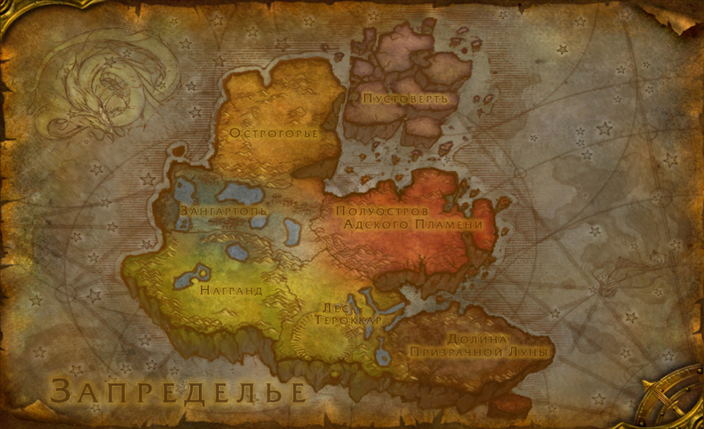
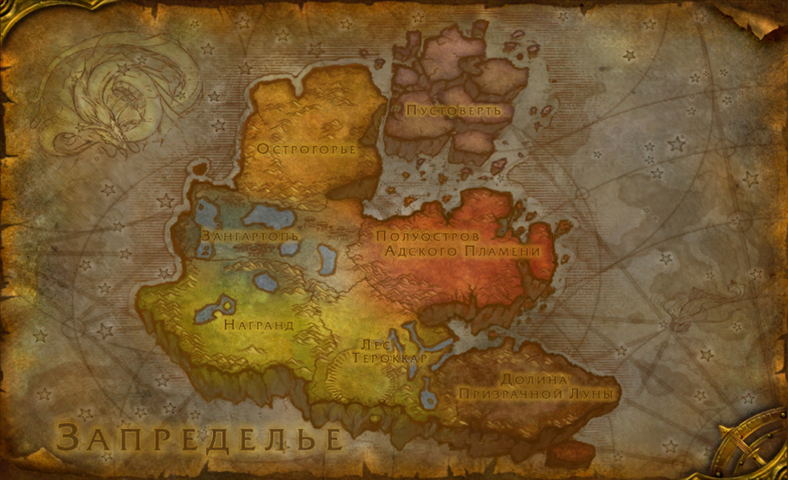

Дрено́р — это суровый мир, озарённый красноватым светом.
До разрушения Запределье было очень похоже на Азерот. После разрушения оно
было затянуто в Круговерть Пустоты. У Запределья больше не было солнца, но
была луна, находившаяся намного дальше, чем до разрушения этого мира. Орки
назвали её «Бледной Госпожой». Вода может показаться грязной, но это не
так: эта планета вполне способна поддерживать жизнь. Это родина орков, а
также других рас — огров, дренорских гигантов, араккоа (птицелюдей),
гроннов и убежище для дренеев — эредаров, бежавших от власти Саргераса из
своего родного мира Аргус. Из Запределья армии орков вторгались в Азерот
через разлом в ткани вселенной, называемый Тёмным Порталом. Силы,
вызванные открытием этого и других порталов, привели к тому, что мир
развалился на несколько островов и обломков суши, которые дрейфуют
независимо друг от друга. Эти обломки соединены цепями, вдоль которых
различные существа перелетают или же перепрыгивают с обломка на обломок.
Ранее орки построили множество чёрных крепостей вокруг своей земли, и
некоторые из них стоят до сих пор. Войска Пылающего Легиона разбили здесь
свои лагеря и осквернили коммуны дренеев, разбросанные вокруг островов.
Раньше Запределье отличалось сравнительно тёплым климатом. Его поверхность
практически полностью была покрыта прериями и лесами из деревьев,
напоминавших гигантские грибы. Цвет неба менялся от оранжевого к красному.
Орки, исповедовавшие шаманские культы, под влиянием шамана (позже ставшего
чернокнижником) Гул’дана попали под влияние Пылающего Легиона и начали
использовать чёрную магию, что привело к порче целого мира. Постепенно
прерии исчезли, уступив место красным пустошам. Мир медленно умирал. После
разрушения Запределья мало кто остался в живых из числа дренеев, а остатки
были в дальнейшем изуродованы орками Скверны, возглавляемыми Владыкой
Преисподней Магтеридоном, который окончательно покорил остатки мира. Вред,
нанесённый Запределью, изменил реальность и время в нём. Магтеридон правил
Запредельем из Чёрного храма с помощью своих преданных помощников,
известных как Повелитель Боли и Госпожа Страданий. Из его стальной хватки
мир был вырван лишь Иллиданом, эльфами крови и нагами.